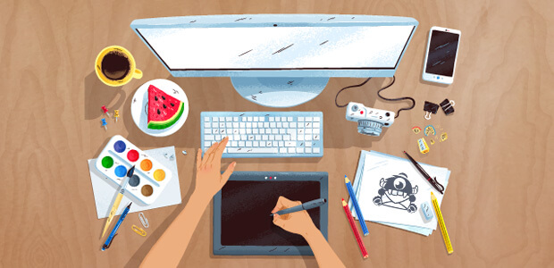

5 Research-Backed Study Techniques
- Pre-test.
When students practice answering questions, even incorrectly, before
learning the content, their future learning is enhanced. Research has shown that
pre-testing improves post-test results more than spending the same amount of time
studying.
- Spaced practice.
Spacing out study sessions—focusing on a topic for a short period
on different days—has been shown to improve retention and recall more than massed practice.
The book How We Learn explains that spaced practice can feel difficult due to an initial
forgetting of knowledge—reacquiring that knowledge takes effort.
- Self-quizzing.
Testing has a negative connotation in this era of standardized testing,
but it is a form of active retrieval practice. Encourage students to make test questions
for themselves as they learn a new concept, thinking about the types of questions you might
ask on a quiz or test. They should incorporate these quizzes into their study sessions,
answering every question, even those they believe they know well.
- Interleaving practice.
Students may rely on blocked practice, studying a set of
problems—such as multiplication problems—as a group until they feel mastery. A more effective
method of studying is to work on a set of problems that are related but not all of the same
kind—for example, a set of math word problems that call for addition, subtraction,
multiplication, or division. The consecutive problems cannot be solved with the same strategy.
This is more effective than doing one multiplication problem after another.
- Paraphrasing and reflecting.
Many of us have read a few paragraphs in a textbook only
to realize that we didn’t retain a single concept or key point presented in those paragraphs.
To show your students how to combat this, have them utilize intentional learning strategies.
These include relating what is being learned to prior knowledge, thinking about how they would
explain the content to a 5-year-old, and reflecting on and asking questions about the content.
-
ATTENTION! If you suffer from anxiety or you need exam training, please contact the student counselor, or visit their website!